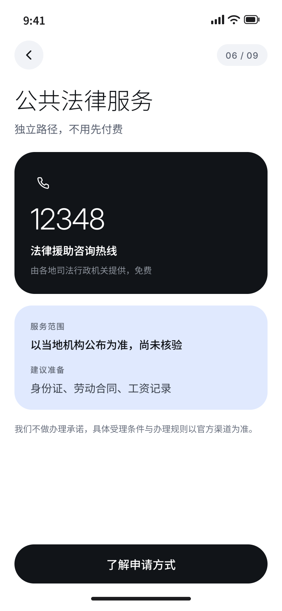
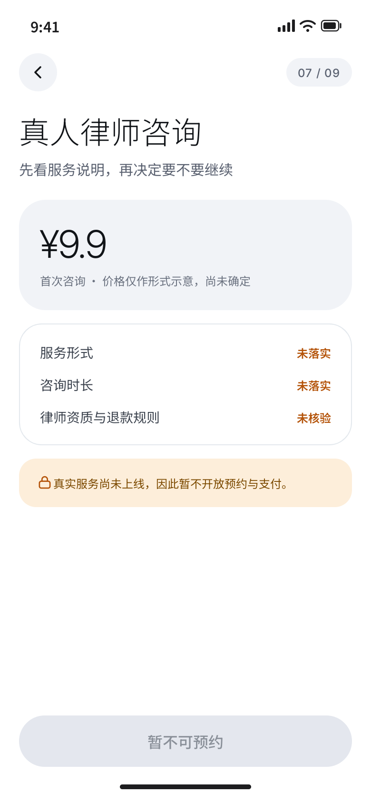
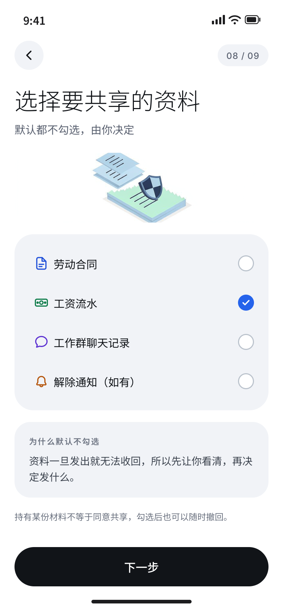

问题不只是用户不知道法律，而是不知道哪些信息重要。
《微律》是一项面向中国大陆普通用户的 AI 法律问题初筛与行动指导产品概念。它尝试把不完整的生活叙述整理为可检查的事实、谨慎的初步分析和可自主选择的服务路径。
贯穿案例的情境是：用户表示连续三个月未按约定收到工资，最近被移出工作群。公司是否正式告知劳动关系结束仍未知；不能因为被移出工作群就认定劳动关系已经终止。该情境是设计案例，不代表真实案件研究结论。
设计问题：如何把一段不完整的生活叙述，转化为用户能够检查的事实摘要、谨慎的初步分析和清晰的行动路径，同时守住 AI 与专业法律服务之间的责任边界？
九个页面组成一条用户可控的服务流程。
AI 负责整理与说明边界，用户决定是否继续、是否寻求公共法律服务或了解律师咨询。每一步都保留检查、修改、跳过或退出的路径。
自由表达，不要求用户先懂法律术语。
逐题确认关键事实，保留不知道与跳过。
用户核对和修改；确认只代表表达准确，不等于事实已被第三方核实。
区分已知信息、待核实事项和法律来源状态。
提供免费、可执行的下一步。
作为独立路径呈现，不以付费为前置。
先了解服务；真实服务未落实时不可预约或支付。
用户主动选择要共享的资料，默认不勾选。
接收方、用途和范围未核验时，授权保持禁用。
五个设计取舍，围绕表达、事实与用户控制权展开。
界面决策围绕具体风险展开：不让用户因为表达困难而退出，不让 AI 把推断包装成事实，也不让服务转接变成强制付费或默认共享。
问题 / 考量先用普通语言承接用户叙述，再逐个询问关键事实。
设计回应选择题降低表达门槛，同时保留“不确定”和跳过。
问题 / 考量用户可以逐项修改摘要；确认不等于第三方核实。
设计回应每条信息显示来源和待核实状态。
问题 / 考量不显示胜诉率、赔偿金额预测或未经核验的法条。
设计回应把用户提供的信息、待核实事项、初步理解和法律来源状态分开。
问题 / 考量自主处理、公共法律服务和律师咨询保持独立选择。
设计回应免费行动指引不被付费墙阻断。
问题 / 考量用户持有某类材料不代表同意共享。
设计回应默认未勾选；预览不等于授权；接收方未核验时按钮禁用。
新版界面 · 九个场景
按当前流程阅读九张界面原图。






状态如何影响下一步
九张主线界面中，重点区分事实待确认、服务未落实和授权不可用。
逐题追问允许用户保留不确定性。事实摘要把待核实内容单独标出，用户可以在进入初步分析前补充或纠正。
初步分析先交代现阶段能判断到哪里，再连接行动指引。公共法律服务和真人律师咨询作为独立入口呈现。
资料选择默认不勾选。接收方未核验时，授权确认页明确显示不可用，避免误以为资料已经共享。
用版式区分分析、行动与授权
从九张新版界面提取能反复使用的界面规则。
- 描述与追问页面使用短段落、问题卡和明确的下一题入口，降低首次输入的压力。
- 初步分析用深色结论区交代判断边界，浅色信息区承载情况和待核实内容。行动指引把可以立刻做的事排在服务入口之前。
- 资料选择和授权确认分别处理选择与确认，用状态文字提示权限及接收方核验结果。
让不确定性和用户控制权成为界面的一部分。
语义色只作为辅助：蓝色表示用户陈述，琥珀色表示待核实，绿色表示行动或确认。所有状态同时使用文字标签和结构表达，不能只靠颜色传递。
- 被移出工作群不等于劳动关系已经终止；工作状态保持未知，继续追问是否收到正式通知。
- 用户陈述、用户确认、证据材料和 AI 推断不能混成同一种事实。
- 用户表示持有劳动合同或工资流水，不会自动勾选为共享资料。
- 预览资料不等于授权；接收方、用途和范围未核验时，授权按钮禁用。
- 公共法律服务保持独立路径；律师咨询真实服务未落实时不开放预约和支付。
验证范围
九张图展示的是概念设计中的主流程。
- 待验证：目标用户能否独立补充事实、理解初步分析的边界并找到合适的下一步。
- 待复核：法律专业人士对内容表述与服务边界的审阅，及真实设备和读屏适配。
- 方案中的 AI、律师服务、支付和资料授权发送仍属于概念范围。
 智审 · 让合同审查有据可查。
智审 · 让合同审查有据可查。